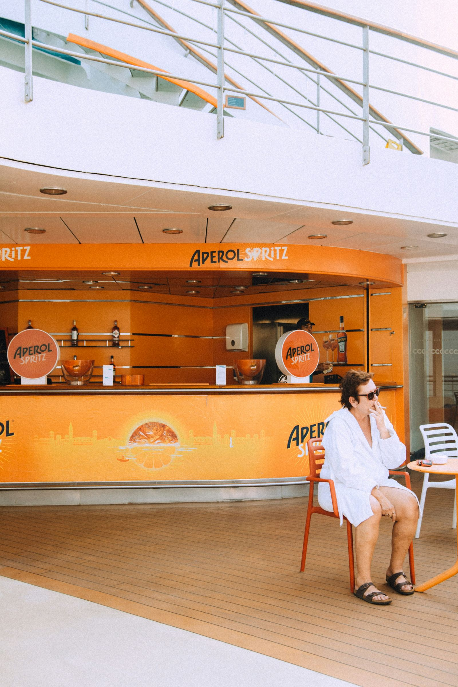
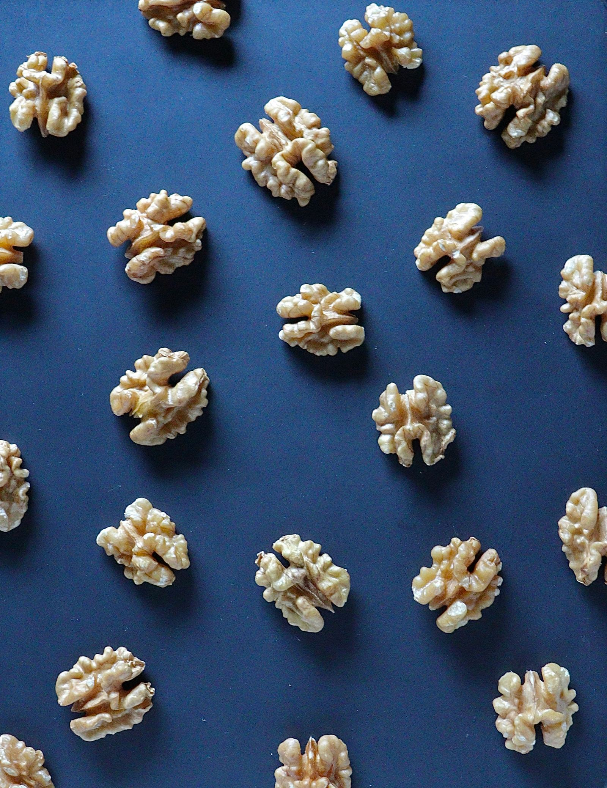
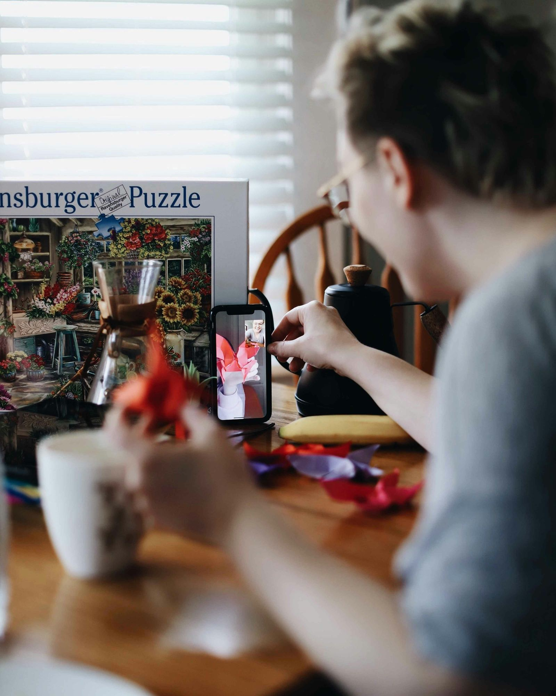
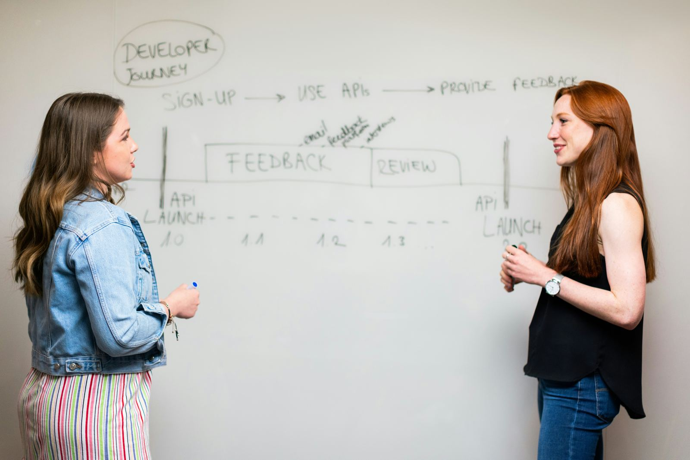

Language Hacking
48 articoli in questa categoria.

Learn the Italian Basics: A Beginner's Guide
Are you intrigued by the melodic language of Italian? Dive into the essentials of Italian language learning with our comprehensive guide. Why Learn…
5 maggio 2024Can I Learn Italian in 3 Months?
Discover the strategies, resources, and tools to achieve conversational fluency in Italian within a quarter of a year. Explore structured learning…
28 aprile 2024Learn the Italian Basics: A Complete Guide
Learning Italian offers cultural, career, and international benefits, with accessible resources and global market opportunities. Why Learn Italian?…
21 aprile 2024
Staying Motivated
Discover the secrets to staying motivated in language learning with expert insights and practical tips. Learn how personalized goals, consistent…
21 aprile 2024Learn Italian Quickly: Innovative Language Learning Hacks
Learning Italian requires embracing mistakes, immersing yourself in the language, and daily practice for fluency. Learning a new language like…
14 aprile 202410 Tips for Learning Italian
Unlock the secrets to mastering Italian with our Top 10 Tips for Learning Italian. From immersive experiences to effective study strategies, discover…
14 aprile 2024Discovering the Italian Language: Beyond Just an App
Learning a new language opens up worlds of possibilities. While apps like Duolingo offer a convenient way to start, "Learn Italian from Home"…
13 aprile 2024The Secrets to Effective Language Learning
Embarking on a journey to master a new language can be an fun, but it often comes with its fair share of challenges. Fear not! With the right…
7 aprile 2024
Easy Hacks for Mastering Italian Language
This series offers expert tips for mastering Italian, including cultural immersion, consistent practice, flashcards, and communities. Welcome to the…
1 aprile 2024Creative Practice
Are you ready to embark on a linguistic journey through the beautiful language of Italian? Speaking Italian is not just about mastering grammar and…
31 marzo 2024Avoiding Common Mistakes
Embarking on the journey of learning Italian can be an enriching experience, but it comes with its share of challenges. Understanding and avoiding…
24 marzo 2024How difficult is to learn Italian?
Learning a new language can feel daunting, but the perceived difficulty varies greatly depending on individual factors such as one's native language…
17 marzo 2024The Power of Mime, Expressions, and Gestures
Vocabulary acquisition is a cornerstone of language learning, yet it's often overlooked in favor of grammar instruction. However, recent research…
10 marzo 2024Italian Study Advices for All Levels
Embark on a tailored Italian journey with an experienced tutor for immersive, effective learning experiences. Learning a new language can be an…
10 marzo 2024
Duolingo vs. Individual Classes
Explore the advantages of 'Learn Italian from Home' over Duolingo and individual classes. Discover a personalized, culturally immersive Italian…
9 marzo 2024Learn Italian from Home: Choosing the Right Online Teacher
Learn Italian online for work or personal enrichment with the perfect teacher – native or bilingual. Are you ready to dive into the beautiful…
3 marzo 2024Learning Italian is hard? Try this!
Learning Italian offers cultural insight, career opportunities, and enhances global communication and understanding for learners. Why Learn Italian?…
3 marzo 2024
Focused Language Learning
Are you mesmerized by the melodic tones of Italian, dreaming of effortlessly conversing in the language of love? Learning Italian may seem like a…
3 marzo 2024Italian Language Learning Shortcuts
The Italian language mastery tips focus on thinking in Italian, using language resources, and native practice. In the first two parts of our series,…
2 marzo 20247 Essential Tips for Progressing
Whether you're a beginner setting out on your linguistic exploration or an advanced learner seeking to refine your skills, these strategies will…
25 febbraio 2024
Cultural influences in Language Learning
Drawing from recent research findings and academic insights, we delve into the nuanced interplay between language acquisition, cultural influences,…
18 febbraio 2024
Gestalt Language Learning Theory
In the colorful tapestry of human communication, language serves as the thread that weaves together cultures, ideas, and experiences. Learning a new…
11 febbraio 2024Learn Italian Strategies for Busy Professionals
Learn Italian from Home offers flexible, task-based Italian courses tailored for busy professionals' schedules. In today's fast-paced world, finding…
10 febbraio 2024
How Long Does It Take to Learn Italian?
Learning Italian, like any new language, requires dedication, practice, and the right resources. Whether you're drawn to Italian for its rich…
4 febbraio 2024
Learning Italian Online for Free
Are you eager to immerse yourself in the beauty of the Italian language but unsure where to start? With the vast array of online resources available,…
28 gennaio 2024Your Guide to Learning Online
Are you eager to embark on a journey to master the beautiful language of Italian but hesitant about the costs involved? Fear not! With the abundance…
21 gennaio 2024Learning Italian Like a Spy
Learn Italian like a spy by seeking immersive opportunities, engaging with natives, and exposing yourself to authentic contexts. Imagine learning…
21 gennaio 2024Italian Classes Near Me
Are you considering delving into the beautiful language of Italian? Perhaps you've already started your journey but find yourself wondering how long…
14 gennaio 2024Italian Cultural Immersion Tips in Individual Classes
Learn Italian for cultural immersion with personalized classes, embracing discomfort, active listening, and mnemonic devices. Learning Italian is an…
14 gennaio 2024Italian Gestures: More Than Just Words
Italy is renowned for its breathtaking landscapes, delectable cuisine, and rich cultural heritage. One distinctive element of Italian culture that…
13 gennaio 2024Learning Italian: Tips and Tricks
Are you eager to embark on a journey to learn Italian but unsure where to start? Look no further! In today's digital age, there's a plethora of…
7 gennaio 2024Fast Italian Language Skills
Learn Italian effectively with 5 tips: find similarities, study greetings, master verbs, pronounce well, list essential words. Learning Italian can…
1 gennaio 2024Can You Learn Italian on Duolingo?
Discover the secrets of mastering Italian with Duolingo! Explore its gamified approach, interactive exercises, and cultural insights. Uncover whether…
31 dicembre 2023
Can I Learn Italian in 1 Year?
Learning a new language can be an exciting yet daunting task, especially when considering the timeframe. For those embarking on the journey to learn…
24 dicembre 2023When Did Celebrities Learn Italian?
From De Niro to Di Caprio, the influence of Italian heritage on Hollywood is profound. While some celebrities wear their Italian origins proudly,…
17 dicembre 2023Interactive Learning Methods
In an increasingly interconnected world, learning a new language has become an ambitious goal for many. With the advent of technology, numerous…
2 dicembre 2023How to Choose the Best Online Italian Course for Beginners
Learning Italian online has never been more engaging or effective, thanks to interactive classes using tools like Flippity and Wordwall. In this…
11 novembre 2023Boost Your Italian Learning: Strategic Tips for Faster Learning
Master a new language effectively: Change phone language, choose wisely, maintain consistency, focus on details, set goals. Mastering a new language…
5 novembre 2023Practical Tips for Studying Italian
Study Italian with Alessio, a passionate, experienced teacher offering personalized classes and practical tips for immersive language learning.…
5 novembre 2023
Recreating Real-Life Immersion
Are you on a quest to master the beautiful Italian language? Whether you're drawn to its melodious cadence, rich cultural heritage, or simply the…
14 ottobre 2023Accelerate Your Italian Learning: Effective Techniques
"Learn Italian from Home" offers personalized, effective Italian courses for all levels, ensuring rapid Italian proficiency. Mastering Italian…
9 settembre 2023Learn Italian for holiday
Prepare for your Italian adventure with essential phrases, cultural insights, and fast-track learning methods. Are you gearing up for an…
12 agosto 2023Top Tips to Study and Learn Italian Quickly
Improve Italian fluency: talk to native speakers, visit Italy, listen to podcasts, read, write, study. In today's fast-paced world, staying…
6 agosto 2023Enhance Your Italian Learning: Effective Strategies
Learning a new language can open doors to opportunities, connect with cultures, and expand horizons. Learning a new language opens doors to a world…
9 luglio 2023
The Effectiveness of Learning with a Private Tutor
Private tutoring provides personalized learning, immediate feedback, and confidence building, enhancing language education for students. In the realm…
8 luglio 2023Is Italian Difficult to Learn? No!
Learning Italian involves embracing culture. Expert tutor offers tailored classes and immersive experiences for fluency. Learning Italian is more…
2 luglio 2023Master Italian Quickly: Language Learning Hacks
Learn Italian efficiently using language learning hacks and tailored online courses from "Learn Italian from Home". Learning a new language can be a…
10 giugno 2023Learn Italian Fast for Beginners
In our Italian learning series, advanced techniques include tailored vocabulary, frequent speaking, and embracing mistakes. Welcome back to our…
1 febbraio 2023